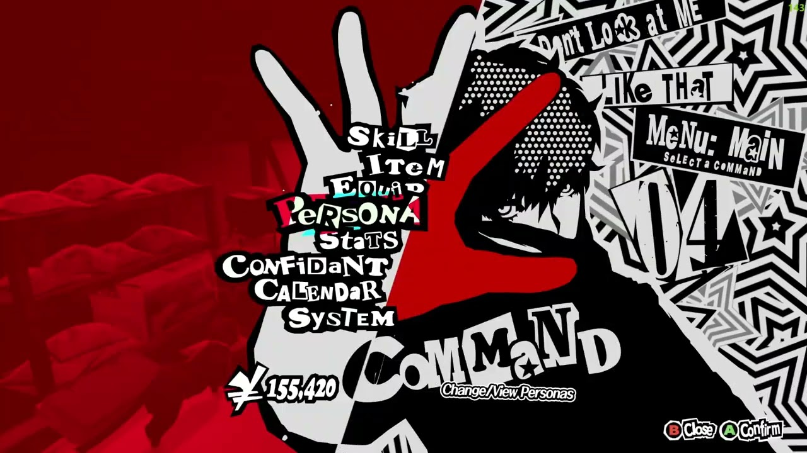

¿Eres fan de los RPG por turnos, pero estás cansado de lo parecidos que son todos? ¿Quieres una nueva experiencia, que manetenga las bases del género pero aporte cosas nuevas?
La saga Persona es probablemente lo que estes buscando.

Desde el mismo comienzo del juego, P5R deja claro que está aquí para impresionar. Comparado con los otros juegos la saga es mucho más dinámico, tanto en combate como fuera de él.
Acompañado se su música, la cual se siente única también, hace que los combates se sientan casi vivos.
Y hay un apartado en concreto del juego en el que creo que todavia no he visto a ningún juego superarlo. Sus menús
Nunca en mi vida me imaginé que acabaría elojiando a un juego por sus el diseño de sus menús, pero los de este juego se merecen esa mención. Son atrevidos y dinámicos, utilizando esa
paleta de colores tan pop y con tanto contraste que nos acompaña durante todo el juego. Cada menú y submenú es único y tiene algo que enseñarnos en tema de animación. Además, en lo que
a calidad de vida se refiere, oscurece por completo al resto de menús de la saga y de otros RPG. Eso sí, no es perfecto, y se podría haber hecho aún más cómodo.
Ya dejando de lado su diseño, adentremonos un poco más en lo que és el gameplay y sus mecánicas.
La saga Persona (y otros juegos de Atlus) es conocida principalmente por 2 mecánicas que rigen todo el juego: el juego estando dividido en días y los confidentes.
Toda nuestra aventura durante el juego estará dictada por tener un tiempo límite siempre para hacer las cosas. Por ejemplo, tendremos x días para completar una mazmorra, y en caso
de fallar será game over. Que esto no te estrese, pues hay días de sobra para hacer estás mazmorras y misiones. Para lo que no hay tanto tiempo, sin embargo, es para subir a nuestros
confidentes.
Los confidentes son aquellos personajes cercanos al protagonista, ya sean miembros del grupo o no. Durante el juego, deberemos gestionar el tiempo para pasar tiempo con ellos o mejorar
nuestras habilidades sociales, las cuales nos permiten profundizar en estas relaciones. Hay algunos más importantes que otros, pero todos tienen una historia que contar. Además, en el caso
de algunos personajes femeninos, al alcanzar cierto nivel con ellas es posible entablar una relación más cercana que la amistad. Si intentas esto con varias, atente a las consecuencias después...
En el juego, los protagonistas combaten usando el poder de sus "Personas", manifestaciones de sus voluntades. Todos los personajes principales tienen una, la cual va evolucionando.
Sin embargo, el protagonista puede capturar y portar varias, radicando hay la variedad en combate. Además puedes más tarde fusionarlas y obtener cientos de otras Personas.
El combate se dicta por las resistencias o debilidades de los personajes o enemigos. Muy parecido a la mayoría de otros RPG, ¿no? Bueno, aquí en caso de golpear la debilidad de un enemigo
se obtiene un +1, que es un turno extra. Este se puede ceder a otro personaje haciendo un relevo para potenciarlo, y en caso de rotar por completo se hace un ataque especial con animación
distinta para cada personaje. Y esta es solo una de las varias mecánicas del juego, que hacen el combate bastante dinámico para ser un RPG por turnos. Además, ¿a quién no le gusta sacarse
una glock en un combate entre seres místicos?
.jpg)